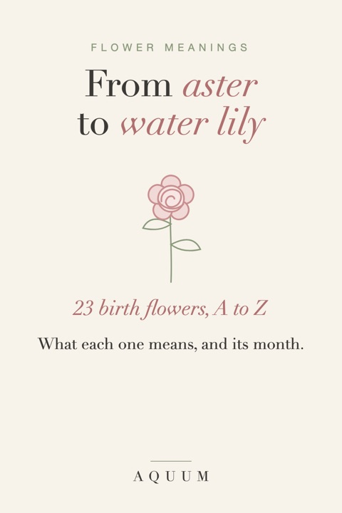

Flower Meanings A to Z: What 23 Birth Flowers Mean
2026-10-02
Written by the team behind Aquum, a small birth flower gift shop. How we make money.

Every flower on this list is a birth flower: twelve main flowers, one for each month, and eleven second flowers that older traditions add. Here they are in alphabetical order, with their month, what they mean, and a link to each one's full guide.
Looking for a specific month instead? See birth flowers by month, or find any birthday's flower with the birth flower finder.
Flower meanings from A to Z
- Aster · September · Wisdom and patience. Star-shaped autumn flowers, named after the Greek word for star.
- Carnation · January · Love that doesn't give up. Ruffled and long-lasting; the color changes the message.
- Chrysanthemum · November · Honest friendship and good fortune. A late-autumn flower of joy and long life in much of Asia.
- Cosmos · October (second) · Order, harmony and peace. Evenly spaced petals around a golden center; named from the Greek kosmos.
- Daffodil · March · New beginnings. One of the first flowers of spring, and a symbol of hope after winter.
- Daisy · April · Innocence and uncomplicated joy. Simple, bright and cheerful; a classic for new mothers and young children.
- Gladiolus · August · Strength of character. Tall sword-shaped spikes; its name comes from the Latin for sword.
- Hawthorn · May (second) · Hope. The May tree: white blossom, wedding garlands and fairy folklore.
- Holly · December (second) · Protection and good cheer. Evergreen with red berries, a winter symbol long before Christmas.
- Honeysuckle · June (second) · Devoted affection. A clinging vine with sweet evening scent: love that holds on.
- Jonquil · March (second) · Affection and desire. A small, very fragrant daffodil with several flowers per stem.
- Larkspur · July · An open heart. Tall spikes of blue, pink or white; the color shades the meaning.
- Lily of the valley · May · The return of happiness. Tiny white bells with a sweet scent, a favorite for bridal bouquets.
- Marigold · October · Warmth that stays, and remembrance. Gold and orange pompoms, central to Día de Muertos.
- Morning glory · September (second) · Affection. Opens with the sunrise and closes by afternoon; asagao in Japan.
- Paperwhite · December · Good wishes for what's ahead. A fragrant white narcissus that blooms indoors in winter.
- Poppy · August (second) · Imagination and remembrance. Silky petals; a flower of dreams, and of remembrance since 1915.
- Primrose · February (second) · Youth and new love. The "first rose" of the year, pale yellow and low to the ground.
- Rose · June · Love in all its forms. The most recognized flower in the world; each color says something different.
- Snowdrop · January (second) · Hope. A white bell that blooms through the snow in late winter.
- Sweet pea · April (second) · Blissful pleasure, and thank you. Ruffled, fragrant climbers; the Victorians gave them to say thank you.
- Violet · February · Quiet loyalty. Small, purple and steady, a flower of faithfulness.
- Water lily · July (second) · Purity and rebirth. Floats on still water and opens again every morning.
How flower meanings came about
Many of these meanings come from the language of flowers, or floriography, which became popular in Victorian England. Books listed what each flower meant, so a bouquet could carry a message without a word. Some meanings are much older, from Greek and Roman myths, religious traditions or folk customs, and a few, like the poppy's remembrance, are only about a century old.
Meanings also vary from one list to another, and color matters: a yellow rose doesn't say what a red one does. Our color meanings guide covers that.
Using flower meanings in a gift
- Pick by person, not only by month. If someone's birth flower's meaning doesn't fit them, their month's second flower might. Or choose a flower from this list for what it says.
- Write the meaning down. A flower with one line about what it means turns into a message. Our free birthday cards and gift tags do it for you.
- Combine a few. A family birth flower bouquet puts everyone's flower, and everyone's meaning, together.
All twelve months fit on one page in the free birth flower chart.
Know what you want to say but not which flower? See flowers that mean thank you, love, friendship and sorry.

Botanical tees at Aquum, one illustrated flower for every month.
See the tees on Etsy